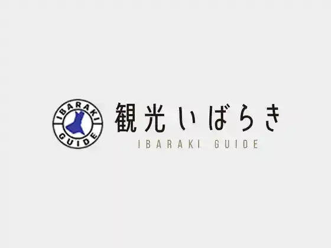

Pasar Moriya (Nobori Sen)
Moriya, Ibaraki · 0297-38-7900 · Official / source link
Pasar Moriya (Kudari Sen)
Moriya, Ibaraki · 0297-38-8133 · Official / source link
Shiki no Sato Park
Moriya, Ibaraki · Official / source link
Ikoi no Sato Joso
Moriya, Ibaraki · 0297-48-3217 · Official / source link

Supadorai Museum
Moriya, Ibaraki · 0297-45-7335 · Official / source link
Meiji Naruhodo Fakutorii Moriya
Moriya, Ibaraki · 0297-20-6041 · Official / source link
Umi Zendera
Moriya, Ibaraki · Official / source link
Cho Ryu Tera
Moriya, Ibaraki · Official / source link
Moriya Manabi Village
Moriya, Ibaraki · Official / source link
LANTERN CAMPING FIELD MORIYA
Moriya, Ibaraki · 0297-21-8889 · Official / source link
Miruku Kobo Moriya
Moriya, Ibaraki · 0297-47-8639 · Official / source link
Toyoko In Tsukuba Ekusupuresu Moriya Ekimae
Moriya, Ibaraki · 0297-47-1045 · Official / source link
Sanmoriya
Moriya, Ibaraki · 0297-47-1518 · Official / source link